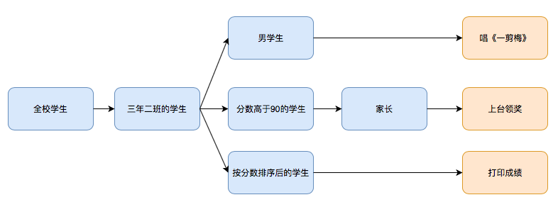

函数式编程
函数式编程是种编程范式，它需要我们将函数作为参数传递，或者作为返回值返还。我们可以通过组合不同的函数来得到想要的结果。
我们来看一下这几个例子：
// 全校学生
let allStudents: [Student] = getSchoolStudents()
// 三年二班的学生
let gradeThreeClassTwoStudents: [Student] = allStudents
.filter { student in student.grade == 3 && student.class == 2 }
由于我们想要得到三年二班的学生，所以我们把三年二班的判定函数作为参数传递给 filter 方法，这样就能从全校学生中过滤出三年二班的学生。
// 三年二班的每一个男同学唱一首《一剪梅》
gradeThreeClassTwoStudents
.filter { student in student.sex == .male }
.forEach { boy in boy.singASong(name: "一剪梅") }
同样的我们将性别的判断函数传递给 filter 方法，这样就能从三年二班的学生中过滤出男同学，然后将唱歌作为函数传递给 forEach 方法。于是每一个男同学都要唱《一剪梅》😄。
// 三年二班学生成绩高于90分的家长上台领奖
gradeThreeClassTwoStudents
.filter { student in student.score > 90 }
.map { student in student.parent }
.forEach { parent in parent.receiveAPrize() }
用分数判定来筛选出90分以上的同学，然后用map转换为学生家长，最后用forEach让每个家长上台领奖。
// 由高到低打印三年二班的学生成绩
gradeThreeClassTwoStudents
.sorted { student0, student1 in student0.score > student1.score }
.forEach { student in print("score: \(student.score), name: \(student.name)") }
将排序逻辑的函数传递给 sorted方法，这样学生就按成绩高低排序，最后用forEach将成绩和学生名字打印出来。
整体结构

值得注意的是，我们先从三年二班筛选出男同学，后来又从三年二班筛选出分数高于90的学生。都是用的 filter 方法，只是传递了不同的判定函数，从而得出了不同的筛选结果。如果现在要实现这个需求：二年一班分数不足60的学生唱一首《我有罪》。
相信大家要不了多久就可以找到对应的实现方法。
这就是函数式编程，它使我们可以通过组合不同的方法，以及不同的函数来获取目标结果。你可以想象如果我们用传统的 for 循环来完成相同的逻辑，那将会是一件多么繁琐的事情。所以函数试编程的优点是显而易见的：
- 灵活
- 高复用
- 简洁
- 易维护
- 适应各种需求变化
如果想了解更多有关于函数式编程的知识。可以参考这本书籍 《函数式 Swift》。